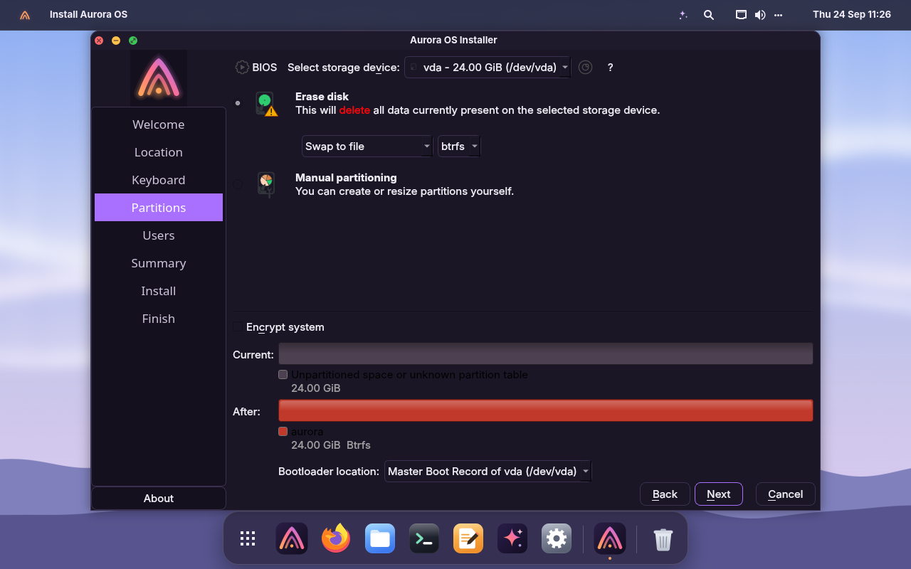
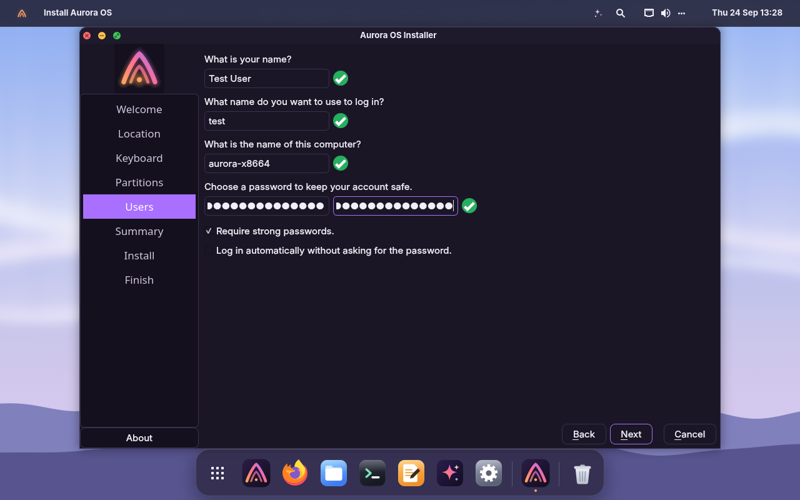
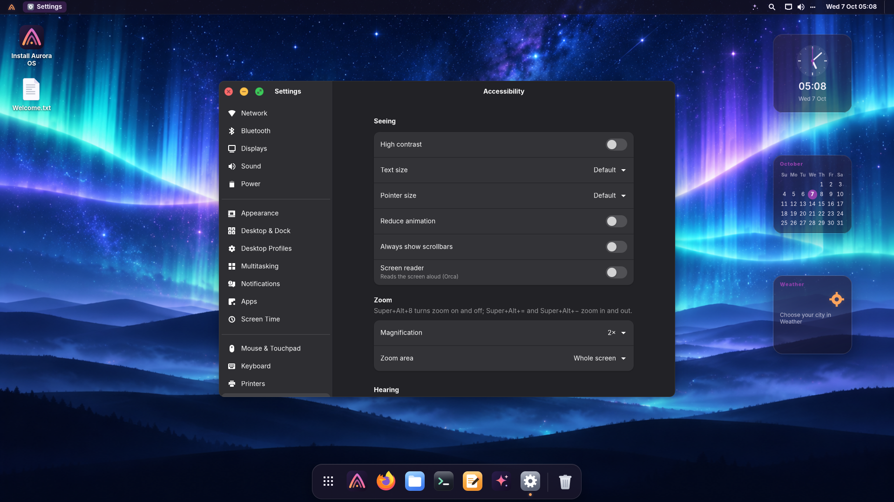
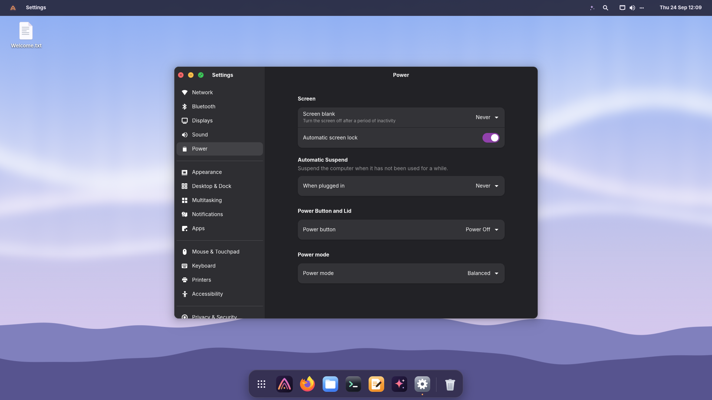
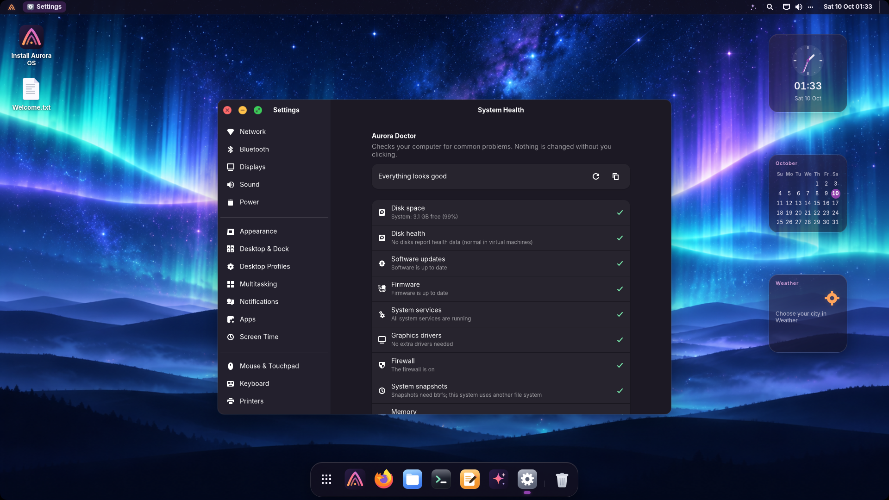

Install guide
From download to desktop.
Try Aurora live from a USB stick without touching your disk, then install it with a guided installer. It works on laptops, desktops and virtual machines, with BIOS or UEFI firmware, and it installs offline.
What you need
- A 64-bit Intel or AMD computer, 4 GB of memory (2 GB minimum)
- 20 GB of free disk space to install
- A USB stick of 4 GB or more (it will be erased)
- For the local AI: 4 GB of memory for the small model, 8–16 GB for the bigger ones
-
Write the ISO to a USB stick
Install balenaEtcher, choose the Aurora ISO, choose your USB stick and click Flash. (Rufus in DD mode and Ventoy work too.)
Use GNOME Disks → Restore Disk Image, or a terminal. Replace
sdXwith your stick. This erases it, so double-check the name withlsblk:sudo dd if=aurora-os-VERSION-amd64.iso of=/dev/sdX bs=4M status=progress oflag=sync -
Boot from the stick
Restart and press the boot-menu key while the logo appears (usually F12, F10, F9, Esc or Del), then pick the USB stick. Both UEFI and legacy BIOS work. If your PC uses Secure Boot, switch it off to start the live USB; you can switch it back on after installing.
-
Try or Install
The Aurora menu offers Try Aurora OS (runs from the stick, touches nothing), Install Aurora OS (opens the installer right away) and a Language menu with 20 languages (Aurora's own apps are fully translated into English, Italian, Spanish, French, German, Portuguese, Russian, Chinese, Japanese, Arabic and Hindi). From the live desktop you can install any time from the dock.
-
Follow the installer
Pick your language, your location on the map and your keyboard. Then choose how to use the disk: erase it, install alongside Windows or another Linux, or partition manually, with optional encryption. Finally create your user and choose whether to log in automatically. Keep the default btrfs file system to get automatic snapshots. Installation takes a few minutes and works offline.

Disk: erase and install, btrfs by default, optional encryption 
Your name, password and computer name -
Restart and enjoy
Remove the stick when asked. The Welcome app greets you on first login. Open Dev Hub to add your favorite tools, or App Center for everything else.
After installing
Undo a bad update in two minutes.
On btrfs (the installer's default) Aurora keeps snapshots of the system: one called Fresh install, one before every update (the last 10), and daily and weekly ones. They cover the system, never your files in Home.
Restart and open the snapshot menu
In the boot menu choose Aurora OS snapshots (hold Shift or press Esc during boot if the menu is hidden), then the snapshot from before the update.
Check that everything works
Aurora starts as it was at that moment.
Make it permanent
Open Settings → Software Updates → Open Timeshift, select the same snapshot and click Restore. Restart once more.
Everyday tips
Share, sync and look after your computer.
📤 Send files to any device
Right-click a file in Files → Send to Nearby Device… (LocalSend: Android, iPhone, Windows, macOS, Linux). To receive, switch on Let nearby devices find this computer in Settings → Sharing.
📶 Share your Wi-Fi
Settings → Network → the QR icon next to your network. Point a phone's camera at it.
🖥️ Share your screen
Settings → Sharing → Share this screen, then connect with any VNC app using the address and password shown.
📱 Your phone
Install KDE Connect on the phone, switch on Allow phones to connect in Settings → Sharing and pair.
🩺 System Health
Settings → System Health checks disks, space, updates, firmware, drivers, services, the firewall, snapshots and the battery. Guided Diagnostics collects a report for installation, boot/login or app problems; you review it before saving, and detailed logs are optional.
🔋 Battery care
On supported laptops, Settings → Power → Limit charging to 80% keeps the battery healthy for years.
♿ Accessibility
Settings → Accessibility: text and pointer size, zoom (Super+Alt+8, whole screen or a lens), a screen keyboard, high contrast, the Orca screen reader.
😴 Suspend, lid and power button
Settings → Power: suspend after a while on battery or when plugged in, and choose what the power button and closing the lid do.
🔔 Quiet apps
Settings → Notifications: turn off notifications app by app, and choose what happens when you plug in a USB drive.
✍️ Accents and symbols
Settings → Keyboard → Compose key: then ' e types é, o c ©, = e €. Super+. opens the emoji picker.



No USB stick needed
Try it in a virtual machine.
Boot the ISO in QEMU/KVM on any Linux computer. Install
qemu-system-x86 qemu-utils ovmf first.
On Windows? The Hyper-V guide walks through the VM settings, installing, and letting Aurora AI use your PC's graphics card.
▶️ Live system
qemu-system-x86_64 -enable-kvm -machine q35 -cpu host \
-smp 4 -m 4G -cdrom aurora-os-VERSION-amd64.iso -boot d \
-device virtio-vga-gl -display gtk,gl=on \
-device intel-hda -device hda-duplex \
-nic user,model=virtio-net-pci -usb -device usb-tabletFrom the repository: make run (BIOS) or make run-uefi. Without 3D
on the host, use -device virtio-vga -display gtk: Aurora switches to its software
renderers by itself.
💾 Install on a virtual disk
qemu-img create -f qcow2 aurora.qcow2 40G
# add to the command on the left:
-drive file=aurora.qcow2,if=virtio
# after installing, boot again without -cdromPrefer a window? GNOME Boxes and virt-manager open the ISO directly (choose Debian 13, 4 GB of memory). VirtualBox and VMware work too.
Troubleshooting
If something doesn't go to plan.
The USB stick doesn't boot
Turn off Secure Boot in the firmware settings (the live USB's boot loader isn't signed yet; installed systems use Debian's signed boot chain, so you can turn it back on after installing). Also try the other USB port and the one-time boot menu key (F12, F10, F9, Esc or Del).
Black screen after the boot menu
Choose Try Aurora OS (safe graphics) in the boot menu. With an NVIDIA card, install its driver afterwards from Settings → Software Updates → Additional Drivers.
Installation or login failed
In the live session or after login, open Settings → System Health → Create Diagnostic Report. Choose installation or startup, review the report and save it only if you want to share it. Detailed logs are off by default because they may contain personal information. For Hyper-V Generation 2, use the VM settings in the Hyper-V guide.
Keeping Windows
Choose Install alongside in the installer and drag the divider. The boot menu then lets you pick the system at startup. Back up your files first.
Wi-Fi isn't working
Aurora includes firmware for most Wi-Fi chips. Plug in a cable or share your phone's connection over USB, then run the updates: newer firmware often fixes brand-new chips. System Health tells you if a driver is missing.